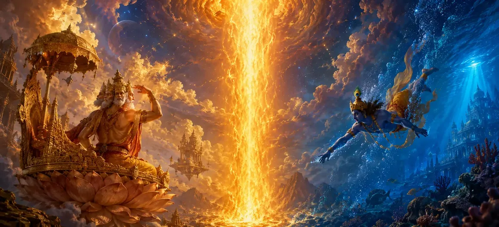

विष्णु और ब्रह्मा का भ्रम - भाग 1
वायवीय संहिता का उनसठवां अध्याय भगवान शिव, भगवान ब्रह्मा और भगवान विष्णु के बीच लौकिक मुठभेड़ की राजसी कथा की शुरुआत करता है, जो महादेव के अनंत प्रकाश के सामने दिव्य गौरव के विघटन पर प्रकाश डालता है।
ऋषि वायु वर्णन करते हैं कि कैसे ब्रह्मा और विष्णु के बीच वर्चस्व को लेकर चल रहे विवाद को दीप्तिमान अग्नि के एक अंतहीन स्तंभ के अचानक प्रकट होने से शांत किया जाता है।
यह अध्याय पौराणिक साहित्य के सबसे गहन प्रसंगों में से एक के लिए मंच तैयार करता है।
अध्याय 69 की मुख्य बातें
लौकिक विवाद
ब्रह्मा और विष्णु में श्रेष्ठता को लेकर संघर्ष
प्रकाश का अनंत स्तंभ
शिव के अनन्त स्तम्भ का प्राकट्य।
महान खोज
ब्रह्मा और विष्णु उत्पत्ति और अंत का पता लगाने निकले।
अहंकार की जाँच करना
दिव्य कृपा से नश्वर और दिव्य गौरव का शिकार।
परम महामहिम
महादेव की अप्रतिम उत्कृष्टता की स्थापना करना।
भाग 2 का पथ
अध्याय 70 में निरंतरता स्थापित करना।
इस अध्याय में मुख्य विषय
वर्चस्व को लेकर विवाद
ऋषि वायु बताते हैं कि कैसे भगवान ब्रह्मा और भगवान विष्णु एक बार इस बात पर तीखी बहस में लगे थे कि उनमें से ब्रह्मांड का सर्वोच्च निर्माता और नियंत्रक कौन है।
उनके परस्पर अभिमान ने उन्हें परमशिव की महान वास्तविकता से अस्थायी रूप से अंधा कर दिया।
प्रकाश के अनंत स्तंभ की अभिव्यक्ति
उनके विवाद के ठीक बीच में, अग्नि का एक चमकदार, अनंत स्तंभ - आदिम ज्योतिर्लिंग स्तंभ - पृथ्वी और आकाश को छेदता हुआ, जिसका कोई दृश्य प्रारंभ या अंत नहीं था।
तीव्र चमक ने दोनों देवताओं को स्तब्ध कर दिया और वे चुप हो गये।
स्तम्भ की जांच के लिए आपसी समझौता
इस चमत्कारी स्तंभ के स्रोत की खोज करने के लिए दृढ़ संकल्पित, ब्रह्मा और विष्णु एक संयुक्त खोज करने के लिए सहमत हुए, अपने पथों को निचले क्षेत्रों और ऊपरी स्वर्ग के बीच विभाजित किया।
जिसने भी दोनों में से किसी एक छोर को पहले ढूंढ लिया उसे सर्वोच्च माना जाएगा।
भगवान विष्णु का वराह के रूप में अवतरण
वराह (दिव्य सूअर) का विशाल रूप धारण करते हुए, भगवान विष्णु स्तंभ के आधार का पता लगाने के लिए युगों तक लगातार खुदाई करते हुए, भूमिगत क्षेत्र में नीचे की ओर कूद पड़े।
उसकी अपार शक्ति के बावजूद, आधार पूरी तरह से अप्राप्य रहा।
भगवान ब्रह्मा का हम्सा के रूप में आरोहण
इसके साथ ही, भगवान ब्रह्मा ने एक दिव्य हंस (हंस) का रूप धारण किया और अग्नि स्तंभ के ऊपरी शिखर को देखने का प्रयास करते हुए आकाश में ऊपर की ओर उड़ गए।
वह चाहे जितना उड़ सके, शिखर पहुंच से परे अंतहीन रूप से फैला हुआ था।
असीम अनन्तता का बोध
दोनों शक्तिशाली देवताओं को अनंत को मापने की असंभवता का सामना करना पड़ा, जिसने भाग 2 में महादेव के नाटकीय रहस्योद्घाटन के लिए मंच तैयार किया।
मानवीय और दैवीय अहंकार ब्रह्मांडीय वास्तविकता के सामने झुक जाता है।
अध्याय 70 की ओर (विष्णु और ब्रह्मा का भ्रम - भाग 2)
अध्याय 69 में स्मारकीय खोज स्थापित करने के बाद, ऋषि वायु अध्याय 70, 'विष्णु और ब्रह्मा का भ्रम - भाग 2' सुनाने की तैयारी करते हैं।
यह अगला अध्याय उनकी खोज के निष्कर्ष, विष्णु के विनम्र समर्पण और ब्रह्मा के घातक अपराध को उजागर करेगा।
अध्याय 69 की मुख्य शिक्षाएँ
विनम्र गौरव
अनंत वास्तविकता के साथ अहंकार का सामना करना।
ज्योतिर्लिंग स्वरूप
शिव असीम प्रकाश के रूप में प्रकट हो रहे हैं।
वराह क्वेस्ट
विष्णु आधार की तलाश में नीचे की ओर खुदाई कर रहे हैं।
हम्सा चढ़ाई
ब्रह्मा शिखर को खोजने के लिए ऊपर की ओर उड़ रहे हैं।
ब्रह्मांडीय पैमाना
परमशिव की अपरिमेय प्रकृति का एहसास।
भाग 2 प्रस्तावना
अध्याय 70 संकल्प और सत्य की स्थापना.
आध्यात्मिक चिंतन
जब अहंकार अनंत परमात्मा को मापने का प्रयास करता है, तो उसे अपनी ही सीमाओं का सामना करना पड़ता है। सच्चा ज्ञान महादेव की कृपा के असीम विस्तार के प्रति समर्पण से शुरू होता है।
अध्याय 69 का संदेश जीना
परमात्मा के पास आने पर सभी प्रकार के आध्यात्मिक अहंकार और बौद्धिक अहंकार को त्याग दें।
पहचानें कि मानव बुद्धि ब्रह्मांडीय रहस्यों के समक्ष स्वाभाविक रूप से सीमित है।
पूजा को विनम्रता, विस्मय और सच्ची भक्ति के साथ स्वीकार करें।
प्रमुख आध्यात्मिक अवधारणाएँ
दीप्तिमान प्रकाश के अनंत स्तंभ के रूप में शिव की अभिव्यक्ति।
लौकिक देवताओं के गौरव को कम करने के लिए बनाई गई दिव्य लीला।
विष्णु द्वारा सूअर के रूप में की गई भूमिगत खोज।
ब्रह्मा द्वारा हंस के रूप में किया गया दिव्य आरोहण।
असीम, अथाह पूर्ण सत्य की प्राप्ति।
महादेव की सर्वोच्च संप्रभु स्थिति की स्थापना।
अध्याय सारांश
वायवीय संहिता अध्याय 69 ब्रह्मा और विष्णु के बीच लौकिक विवाद, अग्नि के अनंत स्तंभ की अचानक अभिव्यक्ति, और इसकी शुरुआत और अंत को खोजने की उनकी निरर्थक खोज का वर्णन करता है, जो अध्याय 70, 'विष्णु और ब्रह्मा का भ्रम - भाग 2' का मार्ग प्रशस्त करता है।
अक्सर पूछे जाने वाले प्रश्न
1. वायवीय संहिता अध्याय 69 का मुख्य विषय क्या है?
अध्याय 69 उस लौकिक मुठभेड़ का वर्णन करता है जहां भगवान शिव भगवान ब्रह्मा और भगवान विष्णु के अहंकार को रोकने के लिए प्रकाश के एक अनंत स्तंभ के रूप में प्रकट होते हैं।
2. इस अध्याय में ब्रह्मा और विष्णु में विवाद क्यों हुआ?
उन्होंने अपनी-अपनी सर्वोच्चता और ब्रह्मांडीय सत्ता पर विवाद किया, जिससे भगवान शिव को हस्तक्षेप करने और अपनी अनंत प्रकृति को प्रकट करने के लिए प्रेरित किया।
3. इस लौकिक आख्यान को ऋषियों को कौन समझाता है?
ऋषि वायु ने एकत्रित ऋषियों को दैवीय सर्वोच्चता की इस गहन कहानी का विवरण दिया।
4. अध्याय 69 के बाद नेविगेशन के लिए अगला अध्याय कौन सा है?
नेविगेशन के लिए अगले अध्याय का शीर्षक 'विष्णु और ब्रह्मा का भ्रम - भाग 2' है।
"जब ब्रह्मांड में अहंकार के स्तंभ ऊंचे हो जाते हैं, तो परमशिव की चकाचौंध रोशनी उन सभी के ऊपर उठ जाती है, जो अहंकार को शुद्ध अहसास में बदल देती है।"
वायवीय संहिता के माध्यम से जारी रखें
अध्याय 69 विष्णु और ब्रह्मा की माया - भाग 1 का समापन करता है। विष्णु और ब्रह्मा की माया - भाग 2 तक जारी रखें।